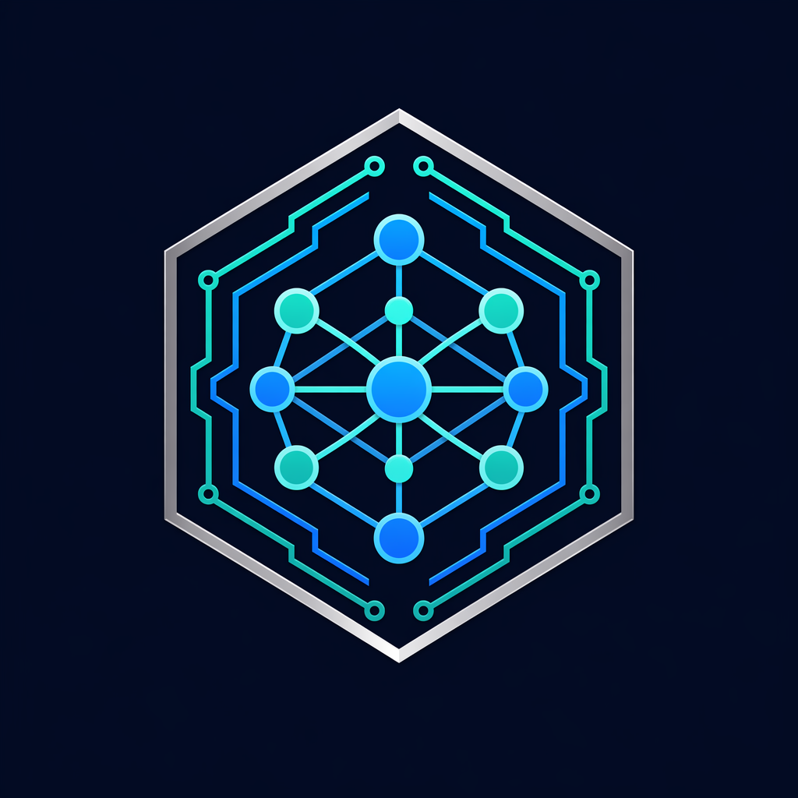
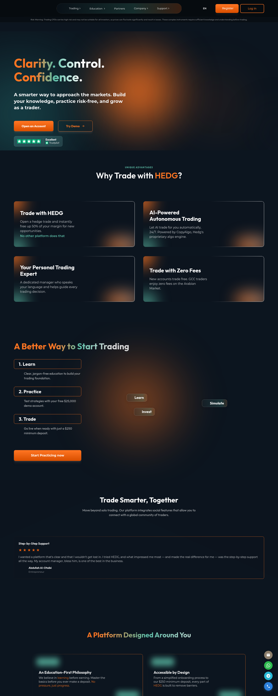

Overall: 3.4 / 5 | Grade B-, strong foundation, four priority fixes
Bottom line. hedg.com is a competently built, well-instrumented marketing property: a WordPress/PHP front end behind Cloudflare, with a separate trading backend, bought-in widgets (TradingView, VoiceSpin voice, Trustpilot), and genuinely strong results on SEO, accessibility, internationalization, edge transport, and regulatory transparency for an offshore broker. It is held back from state-of-the-art by four fixable issues: mobile Core Web Vitals fail, the Content Security Policy is self-defeating, a JSON Web Token is placed in a JavaScript-readable cookie before login, and the headline AI ("autonomous trading") product has thin public risk and trust disclosure.
| Lens (graded against the 3 reference docs) | Score | Maturity and verdict |
|---|---|---|
| A. Systems & Performance | 3.0/5 | L3. Edge and transport excellent; mobile front-end performance is the weak point. Improve. |
| B. Architecture & API | 3.5/5 | L3. Sensible build-vs-buy; dependency hygiene and locale consistency are the gaps. Improve. |
| C. Data Layer (external signals) | 3.5/5 | No external leakage observed; API root not exposed. Internal review needs authorized access. Improve. |
| D. Security | 3.0/5 | L2 to L3. Strong header baseline undone by CSP and a non-HttpOnly token cookie. Improve. |
| E. Product, Trust & Compliance | 3.5/5 | Clear funnel and good regulatory transparency; consent and claim-copy gaps. Improve. |
| F. AI Features (public surface) | 2.5/5 | Autonomous-AI claim is front and center; public AI risk and trust disclosure is thin. Redesign the disclosure. |
| G. SEO & Accessibility | 4.5/5 | L4. Excellent. Minor a11y polish only. Approve. |
alt-svc: h3), TLS 1.3, Brotli, and HSTS preload.dir="rtl", JSON-LD, complete alt coverage.default-src 'none', object-src 'none', frame-ancestors 'self').'unsafe-inline' and 'unsafe-eval' from the script CSP.HttpOnly + SameSite.Scoring blends the L1 to L5 maturity ladder from "Production AI & Software Engineering, June 2026" with the principal-engineer grading lens from the curriculum doc and the externally observable data-layer subset from the SQL doc. Compliance items are observations for legal review, not determinations.
The edge and transport layer is state-of-the-art. The front-end asset pipeline is not, and the gap shows up almost entirely on mobile.
alt-svc: h3=":443"; ma=86400), TLS verified, Brotli on the document (content-encoding: br), and HSTS with preload (max-age=31536000; includeSubDomains; preload). The homepage served from edge cache (cf-cache-status: HIT).
loading="lazy"; images have no intrinsic dimensions (unsized-images), which drives the 0.26 CLS.srcset, lazy-load below-the-fold images, set explicit width/height on every image, and consider critical-CSS inlining for the hero. For a broker whose acquisition is increasingly mobile, this is a direct conversion and SEO cost.
/wp-content/uploads/2025/11/hero-vector.png and /wp-content/uploads/2025/12/candles-hedg.png return 404. Lighthouse also flags console errors from these. Low effort, removes layout jank near the LCP element.bcdn.hedg.com and the jsDelivr Swiper CSS carry ~7-day TTLs. Static, content-hashed assets should be served immutable with a 1-year TTL. Minor repeat-visit win.The shape is a classic and defensible one for a broker: a WordPress/PHP brochure (x-powered-by: PHP/8.2.5, wp-* paths, wp-sitemap.xml) fronted by Cloudflare, with a separate api.hedg.com trading backend referenced in the CSP connect-src. Commodity capability is bought, not built.
trackflare.net, plus the VoiceSpin WebRTC endpoint. In a clean lab load only Cloudflare, Google Fonts, and jsDelivr actually fired (the heavier trackers appear gated or lazy), which is good, but external scripts carry no Subresource Integrity (integrity) attribute. Each allowlisted origin is a supply-chain entry point.
Fix: add SRI to third-party scripts, document why each origin is trusted, and identify or remove trackflare.net.
/en/-prefixed and unprefixed paths (for example /en/legal-documents/ next to /trading/markets/ and /company/about-us/). This risks redirect chains and duplicate-content dilution. Normalize to one canonical locale-prefix convention.By design, almost nothing about the database tier is observable from a public marketing site, and that is the honest finding. What can be observed is clean.
api.hedg.com did not respond to an unauthenticated root request, so the API surface was not externally enumerable from this audit (a good default). No SQL fragments, stack traces, ORM names, or driver errors were surfaced in any response body. No GraphQL introspection endpoint was detected. Resource identifiers that would enable enumeration are behind the authenticated trading app, which this audit did not access.x-powered-by: PHP/8.2.5 is returned on every response. Beyond leaking the framework, the pinned patch level (8.2.5) is old for mid-2026 and, if accurate, indicates the runtime is behind on security patches. Remove the header (expose_php = Off) and confirm the PHP build is current.pg_stat_statements + auto_explain enabled on every production instance.Retry-After rather than queue-and-hang.The HTTP header baseline is genuinely strong; two specific choices undo a lot of it. Lighthouse best practices scored 96.
x-content-type-options: nosniff, x-frame-options: SAMEORIGIN, referrer-policy: strict-origin-when-cross-origin, a tight permissions-policy, and a CSP whose skeleton is correct: default-src 'none', object-src 'none', base-uri 'self', frame-ancestors 'self', form-action 'self'.'unsafe-inline', 'unsafe-eval', and data:. Lighthouse flags this directly: "host allowlists can frequently be bypassed; 'unsafe-inline' allows the execution of unsafe in-page scripts; avoid plain data: URL schemes." With ~20 inline scripts on the page, the current setup keeps the strong skeleton from actually preventing XSS.
Fix: move to per-request nonces or hashes plus 'strict-dynamic', and drop 'unsafe-eval' and data: from script-src.
csp-xss. For a platform that handles funds and identity, this is the highest-value security fix.webrtc_jwt_token (an RS256 JWT) and webrtc_user_id. Both are Secure but carry no HttpOnly flag and no SameSite attribute. A token readable by JavaScript is exfiltratable via any XSS, and the missing SameSite adds CSRF exposure. (The token value is deliberately not reproduced or decoded in this report, per data-handling policy.)
Fix: set HttpOnly and SameSite=Lax (or Strict), or stop issuing the token to anonymous visitors and keep it server-side. Note the contrast: the preferred_language cookie is correctly set with SameSite=Lax.
wp-login, xmlrpc, and wp-json at the crawl layer (good). Pair that with automatic updates, a WAF ruleset on Cloudflare, and Subresource Integrity on third-party scripts.access-control-allow-headers: Content-Type, Authorization, X-Requested-With. CORS headers belong on API responses, not on an HTML page; review the origin config to ensure CORS is scoped to the API, not blanket.Compliance items below are observations from the public site, not legal determinations. They require validation by qualified compliance/legal staff against the broker's actual target markets.
AI is a headline feature, not an afterthought: "AI-Powered Autonomous Trading. Let AI trade for you automatically, 24/7. Powered by CopyAlgo, Hedg's proprietary algo engine," alongside social CopyTrading ("Follow Experts. Trade Smarter."). The product UX sits behind login and was not accessed, so this lens grades the public surface only.
The strongest area of the site. Lighthouse SEO 100, Accessibility 98, on both form factors.
x-default, en-US, ar, pt-BR, es-ES, en, pt, es), 16 Open Graph and 12 Twitter-card tags, JSON-LD for Organization, WebSite, and WebPage, a clean robots.txt (recently audited), and wp-sitemap.xml. Internationalization is done properly: the Arabic locale serves <html dir="rtl" lang="ar">, and Spanish and Portuguese carry correct lang values.alt attribute (0 missing; 26 intentionally empty for decorative images), a single H1, a sensible landmark structure, and correct language metadata.heading-order (heading levels are not strictly sequential), label-content-name-mismatch (some image-wrapped CTAs whose visible label and accessible name diverge), and unsized-images (also the CLS driver in lens A). All low effort.robots.txt blocks /ko/, /ja/, and /zh-hk/ as "hidden/staging language prefixes," which suggests partially shipped i18n. Either finish and publish or remove those locales.No P0 (the site is up, served securely, and crawls cleanly). Priorities are ordered by user and risk impact against effort.
| Priority | Action | Lens | Effort |
|---|---|---|---|
| P1 | Fix mobile Core Web Vitals: defer render-blocking CSS/JS, ship WebP/AVIF + responsive srcset, lazy-load below-fold images, set explicit image dimensions, fix the 2 broken hero assets. Target mobile LCP under 2.5s, CLS under 0.1. | A | Medium |
| P1 | Rebuild the script CSP on nonces/hashes + 'strict-dynamic'; remove 'unsafe-inline', 'unsafe-eval', data:. | D | Medium |
| P1 | Set HttpOnly + SameSite on the webrtc JWT/user cookies, or keep the token server-side and out of anonymous sessions. | D | Low |
| P2 | Add a consent manager (block non-essential trackers pre-consent) and publish a Cookie Policy. | E | Medium |
| P2 | Publish a CopyAlgo transparency page with AI-specific risk, no-guarantee, methodology, and user-control disclosure; reconcile the "guides every trading decision" copy with the no-advice position. | E, F | Medium |
| P2 | Remove x-powered-by, confirm PHP patch level, add SRI to third-party scripts, identify/remove trackflare.net, scope CORS to the API. | B, C, D | Low |
| P3 | Normalize locale URL prefixes, lengthen static-asset cache TTL (immutable), finish or remove staging locales, fix heading-order and label/name a11y items. | B, G | Low |

api.hedg.com. Active security tests (injection, IDOR, tenant isolation) are listed as hypotheses for an authorized engagement, not exercised.curl (headers, content, compression, robots/sitemap), Google Chrome 149 headless (Lighthouse + screenshots), a headless-browser MCP (DOM/structure/accessibility extraction).
evidence/00-recon-and-rubric.md headers, CSP, cookies (redacted), robots, third-party fingerprint, and the distilled rubrics.evidence/lighthouse_mobile.json, evidence/lighthouse_desktop.json full Lighthouse results.screenshots/hedg-desktop-home.png, screenshots/hedg-mobile-home.png.ai-team-logo.png the AI Engineering team emblem.